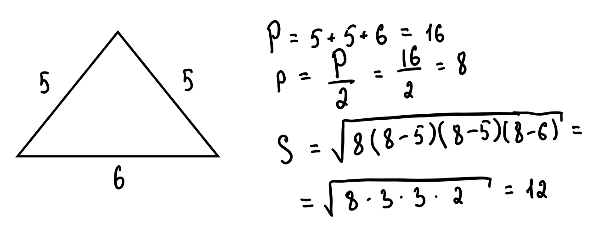

Основные элементы треугольника
Высота треугольника
Рисунок 3 - высоты треугольника
Перпендикуляр, проведенный из вершины к противоположной стороне. Все три высоты пересекаются в одной точке.
Формула площади: S = ½ × a × h, где a - основание, h - высота.
Медиана треугольника

Рисунок 4 - медианы треугольника
Отрезок, соединяющий вершину с серединой противоположной стороны. Точка пересечения делит медианы в отношении 2:1.
AO = 2 × A₁O
Биссектриса треугольника
Рисунок 5 - биссектрисы треугольника
Делит угол пополам и противоположную сторону на отрезки, пропорциональные прилежащим сторонам:
A₁C / A₁B = AC / AB
Периметр и площадь
Периметр - сумма длин всех сторон. Формула Герона для площади:
S = √[p(p - a)(p - b)(p - c)]
где p - полупериметр: p = (a + b + c)/2

Пример: треугольник со сторонами 5, 5, 6
Прямоугольный треугольник
Рисунок 8 - углы прямоугольного треугольника
Особенности:
- Один угол равен 90°
- Сумма двух других углов: α + β = 90°
- Стороны: гипотенуза (напротив прямого угла) и катеты
Свойства высоты
Рисунок 9 - высота из прямого угла
Высота делит прямой угол на углы α и β (равные острым углам треугольника).
Свойства медианы
Рисунок 10 - медиана к гипотенузе
Медиана к гипотенузе равна её половине и делит треугольник на два равнобедренных.
Описанная окружность
Рисунок 11 - прямоугольный треугольник в окружности
Центр окружности лежит на середине гипотенузы, которая является диаметром.
Свойство угла 30°
Рисунок 12 - свойство 30° угла
Катет, лежащий напротив угла 30°, равен половине гипотенузы (и обратно).
Теорема Пифагора
Рисунок 13 - теорема Пифагора
a² + b² = c²